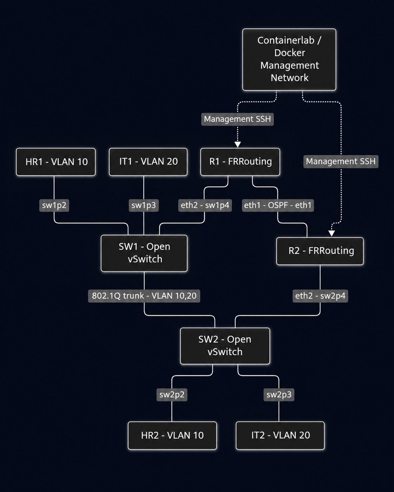

Network Troubleshooting
Intelligence Platform
What does a passing ping
leave unanswered?
Project Overview
I built this project in October and November 2026 to gain hands-on experience troubleshooting networks in a Linux lab.
The platform collects interface, OSPF, VLAN, and Syslog evidence from a virtual network lab and compares it with a known-good baseline. When it finds an issue, it identifies the affected device or port, links the finding to the supporting evidence, and recommends a next step. It also evaluates whether a configuration change could be related to an incident.
20 of 20 controlled lab tests passed across four troubleshooting scenarios.
Tools & Technologies
- Lab environment
- Linux on WSL2, Docker, and Containerlab
- Routing and switching
- FRRouting and Open vSwitch
- Evidence collection and analysis
- Python, SSH, Syslog, and SQLite
Lab Topology
Two routers and two switches connect four Linux hosts. VLANs 10 and 20 provide separate paths for testing connectivity across the lab.

Troubleshooting
Scenarios
Each walkthrough shows the healthy baseline, what changed in the lab, and how the platform classified what it observed.
How to Read the Results
healthyThe observed state matches the baseline for this check.
fault_detectedThe check identified a specific fault.
configuration_mismatchThe observed configuration differs from the baseline.
interface_issueThe OSPF check found a problem with the underlying interface.
insufficient_evidenceThe available evidence was insufficient for a diagnosis.
unclassified_mismatchThe interface state differs from the baseline and falls outside the defined fault categories.
The fourth scenario uses a separate correlation assessment. candidate_for_investigation means a change is worth examining as a possible contributor to the incident.
What I Learned
This project taught me to separate a confirmed finding from a possible cause. I also learned to verify recovery against the original baseline by checking that traffic or OSPF adjacency returned after restoring the lab.
View Source on GitHub